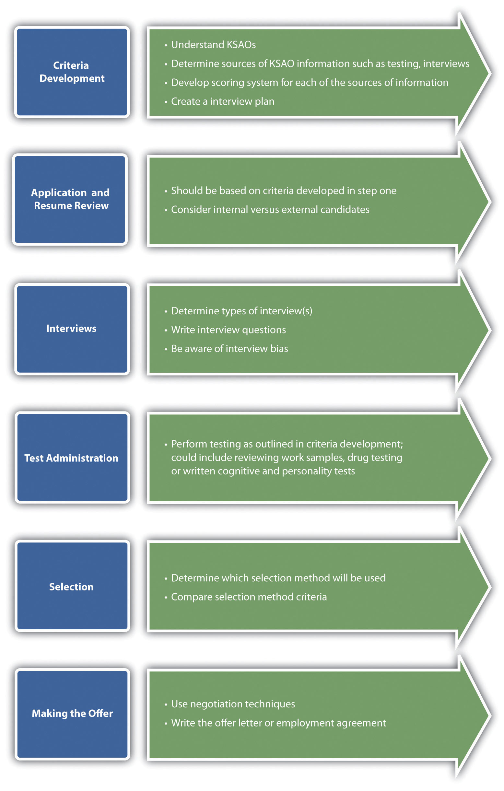

Once you have developed your recruitment plan, recruited people, and now have plenty of people to choose from, you can begin the selection process. The selection processThe steps involved in choosing people who have the right qualifications to fill a current or future job opening. refers to the steps involved in choosing people who have the right qualifications to fill a current or future job opening. Usually, managers and supervisors will be ultimately responsible for the hiring of individuals, but the role of human resource management (HRM) is to define and guide managers in this process. Similar to the recruitment process discussed in Chapter 4 "Recruitment", the selection process is expensive. The time for all involved in the hiring process to review résumés, weight the applications, and interview the best candidates takes away time (and costs money) that those individuals could spend on other activities. In addition, there are the costs of testing candidates and bringing them in from out of town for interviews. In fact, the US Department of Labor and Statistics estimates the combined direct and indirect cost of hiring someone new can reach upwards of $40,000.Leroy Hamm, “Pre-Employment Testing,” IHD Corporation, n.d., accessed August 2, 2011, http://www.ihdcorp.com/articles-hr/pre-employment-testing.htm. Because of the high cost, it is important to hire the right person from the beginning and ensure a fair selection process. For example, the Austin, Texas, fire department calculated it would cost $150,000 to reinterview candidates, after the interview questions were leaked to the public, giving some candidates possibly unfair advantages in the interview process.KVUE News, “Re-Interview Process to Cost $150,000,” June 23, 2011, accessed August 2, 2011, http://www.kvue.com/news/local/AFD--124452379.html.
The selection process consists of five distinct aspects:
Criteria development. All individuals involved in the hiring process should be properly trained on the steps for interviewing, including developing criteria, reviewing résumés, developing interview questions, and weighting the candidates.
The first aspect to selection is planning the interview process, which includes criteria development. Criteria development means determining which sources of information will be used and how those sources will be scored during the interview. The criteria should be related directly to the job analysis and the job specifications. This is discussed in Chapter 4 "Recruitment". In fact, some aspects of the job analysis and job specifications may be the actual criteria. In addition to this, include things like personality or cultural fit, which would also be part of criteria development. This process usually involves discussing which skills, abilities, and personal characteristics are required to be successful at any given job. By developing the criteria before reviewing any résumés, the HR manager or manager can be sure he or she is being fair in selecting people to interview. Some organizations may need to develop an application or a biographical information sheet. Most of these are completed online and should include information about the candidate, education, and previous job experience.
Figure 5.2 The Selection Process at a Glance
We will discuss each of these aspects in detail in this chapter.
In a 2010 interview,Adam Bryant, “The X Factor When Hiring? Call It Presence,” June 26, 2010, New York Times, accessed July 12, 2011, http://www.nytimes.com/2010/06/27/business/27corner.html?scp=1&sq=Selander&st=cse&pagewanted=1. Robert Selander, then CEO of MasterCard, cited presence as one of the most important aspects to acing an interview. He describes how, in any large organization, an employee will be expected to engage with a variety of stakeholders, from a member of Congress to a contractor replacing the carpet in the building. He says that a good employee—at any level of the organization—should be able to communicate well but also be able to communicate to a variety of stakeholders. We discuss communication in Chapter 9 "Successful Employee Communication". Selander also says he will always ask the candidate about his or her weaknesses, but more importantly, how the candidate plans to address those weaknesses to make sure they do not become a barrier to success. He always asks the question “What can you do for us?” When asked if he could pose only one interview question, what would it be, his answer was, “Share with me two situations, work related that you are proud of, where something was achieved based on your own personal initiative and the other where the achievement was a result of the team getting something done that you could not have done alone.” In other words, Selander is looking for not only personal ability but the ability to work within a team to accomplish tasks. Selander offers advice to new college grads: try to find an organization where you can be involved and see all aspects of the business and be provided training to help you with certain skills that will be needed.
When was the last time you interviewed for a job? Did the process seem to flow smoothly? Why or why not?